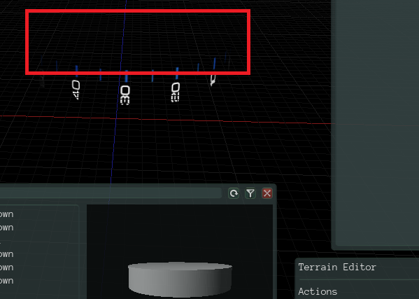

fanchenxinok
hi all,
i create a nurbs cylinder model without up and down surface in blender.
in blender i can render a texture on the surface show in the following image:
then i export this modle as cylinder_surface.mdl, and use Urho3D Editor to open it,
and render texture on it, but part of modle can not see(marked with red box):

what can cause this problem? could anyone help me figure out this problem?
best regards!